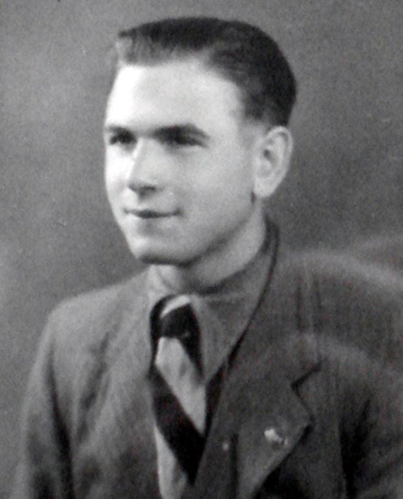
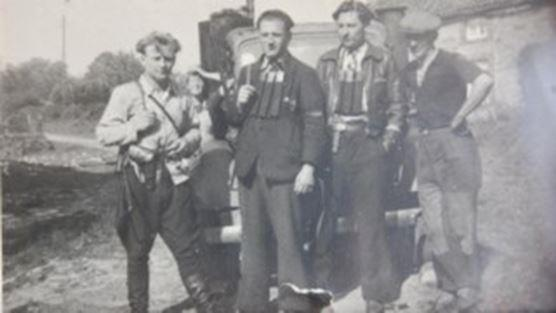
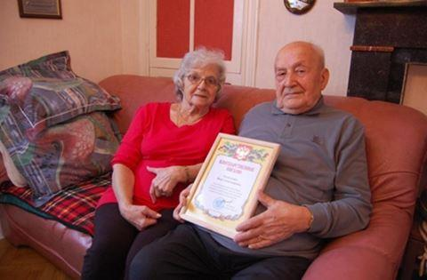
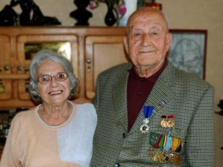

La seconde guerre mondiale a coûté des millions de vies à travers le monde. Des femmes, des jeunes et des personnes âgées sont ont affronté l’ennemi. Sous leurs yeux, des villages entiers, des villes parfois même, disparaissaient. Les héros qui se sont battus à l'époque n'étaient pas tous connus. Malheureusement, la plupart d’entre eux n’ont pas connu la fin de la guerre. Cependant, beaucoup de ceux qui ont traversé cet terrible conflit ont survécu. Nous vous présentons ici une personne exceptionnelle.
Ivan Aleksandrovich Terekhov était combattant de la 31e brigade des Partisans Armés belges. Avant cela, il avait servi dans les forces antiaériennes près de Léningrad.
« Quand les Allemands nous ont attaqués, j'ai été appelé à combattre dans l'armée russe. J'étais chauffeur d'un camion-mitrailleur. Lors de l'attaque des Nazis, j'ai participé à des combats en Ukraine. »
Lors d’un combat, il est étourdi par le souffle d’un obus et fait prisonnier.
« J'ai été emmené dans les camps de travail. D'abord en Allemagne, puis plus tard en Belgique où je travaillais dans les mines de Flandre. »
Il réussit alors à s'évader.
« Je me suis enfui d’une mine de Flandre en montrant mes lunettes cassées à un des gardes. Il a dit que je pouvais les faire réparer, a ouvert d’entrée réservée aux travailleurs flamands, et j’en ai profité pour m’enfuir. C'était l'été, je vivais dans les bois, je mangeais des champignons et des baies. »
« Je me cachais dans les bois puis j'ai retrouvé d'autres camarades russes. J'ai travaillé dans une ferme. Je logeais dans les foins... »
Il arrive à Ferrières et il est mis en contact avec un réseau de résistance.
« A Ferrières, l'Armée Secrète s'est bien occupée de nous, notamment Georges Laurent. Au début, on a été avec d'autres Russes, hébergés dans une cabane dans les bois. Puis, on nous a logés dans des familles des villages. On changeait toutes les semaines de lieu. J'ai même reçu des papiers d'identité de la commune de Ferrières. Je m'appelais Gilles Gilson. Mais heureusement que je n'ai jamais été arrêté car je ne parlais pas encore le français...
Nous étions une vingtaine. Il y avait aussi des Polonais, des Yougoslaves... On a eu aussi à un moment donné deux pilotes américains d'un avion qui avait été abattu dans les environs. Ils sont restés quelques jours sous notre protection. Par la suite, je suis allé dans le Front de l'Indépendance à Aywaille. »
Ensuite, Ivan Terekhov rencontre la jeune et jolie Madeleine Mouchasse qui est devenue l'amour de sa vie. Il l’épouse et reste en Belgique. Après la guerre, il est chargé de la traduction de documents pour les soldats soviétiques renvoyés de Belgique en URSS. Vu qu’Ivan Alexandrovich connaissait de nombreux partisans, il remplissait avec assurance les listes de personnes envoyées dans les camps d'après-guerre de son pays d'origine. Son aide a été capitale pour tous ces combattants.
Le vétéran se souvient avec admiration des combattants intrépides qui ont fui les camps pour se battre contre les fascistes. I. A. Terekhov est retourné dans son pays natal, à Smolensk seulement dans les années soixante-dix. Là, il a appris ce qui est arrivé à sa famille dans son village natal : Le père et le frère aîné sont morts pendant la guerre, sa mère et son frère cadet ont été abattus. De sa famille, il ne restait qu'un seul frère en vie.
Ivan Alexandrovitch Terekhov a reçu de nombreuses décorations, dont chevalier de l’ordre du Roi Léopold II et médailles de vétéran de la Résistance belge, ainsi que de l’Armée rouge.
Ivan Alexandrovich est décédé janvier 2014 à l'âge de 92 ans. Il avait trois filles et douze petits-enfants. Entouré de ses proches, il a vécu une vie heureuse après la guerre. Mais cette fin heureuse ne nous fait pas oublier les terribles pertes et l'héroïsme des combattants de la Seconde Guerre mondiale.

A. S.
NOTES ET RÉFÉRENCES
1. Article publié sur le site de la Fédération belge des Organisations Russophones https://www.bfro.be/ru/obyavleniya.html?cmp_id=102&news_id=10737 (дата обращения 10.08.2020).
2. Article de A. Rubtsov, « Partisans soviétiques en Belgique » ( Рубцов А. Советские партизаны в Бельгии // Режим доступа: https://www.liveinternet.ru/users/5347628/post382844436).
Partager cette page